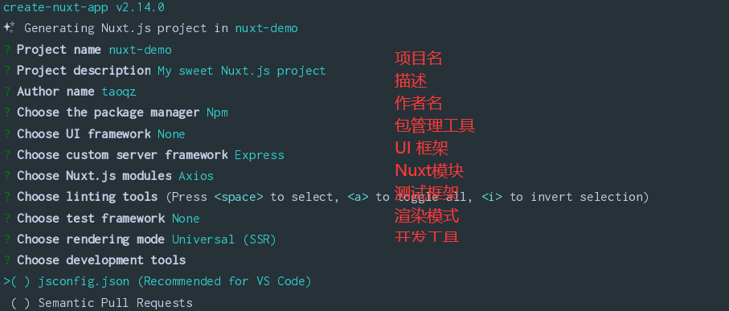
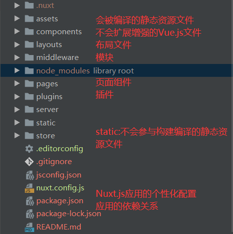
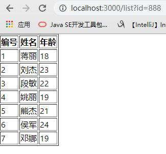
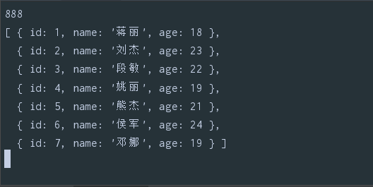
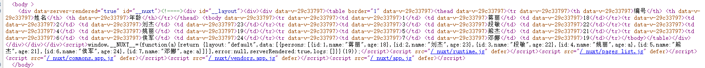

Nuxt
Nuxt是一个服务器端渲染技术(SSR server side render),基于Vue之上
官网 : https://zh.nuxtjs.org/guide
之前使用的Vue是客户端渲染,也就是客户端向服务器发送请求,服务端将数据返回给客户端,客户端将数据填充到占位符中,但这种方式不利于SEO
SEO:搜索引擎只会采集页面中的静态数据,对网站进行收录,可以让更多人访问到,并不会采取ajax返回的数据,服务器端渲染技术可以处理这个缺点
服务器端渲染技术,其实在学传统web开发时就已经接触过了,jsp时代便是使用tomcat进行编译,将数据提前填充拼接到HTML中返回给客户端,客户端直接渲染HTML就可以了,以及其他的模板引擎,比如freemark等
Nuxt使用Node作为服务器进行渲染,但也并不是所有代码都运行在Node中,比如alert、localStorage、window、location、document这些客户端特有的代码(当然也有使用运行的时机,在之前单纯的Vue中就是可以的),该方式固然对服务器性能要求高,所以根据业务进行选用即可,比如新闻,博客,资讯等
1.安装及创建
1.1 环境准备
安装node
安装vue-cli，nuxt是基于vue之上的
Vue文档 https://cli.vuejs.org/zh/guide/installation.html
npm install -g vue-cli
安装nuxt项目
yarn global add create-nuxt-app
1.2 创建项目
npx create-nuxt-app <项目名>
创建项目的选项

同时Nuxt也支持热更新,即在修改代码后会自动重新编译,并且影响页面显示
1.3 项目结构

1.4 编译运行
# 安装项目所有依赖
npm run install
# 服务在热重载状态下运行在localhost:3000
npm run dev
# 编译成上线项目并且启动服务
npm run build
npm run start
2.路由
2.1静态路由
没有参数的路由,在Nuxt中页面组件都是放在pages中,并且会根据文件夹及文件名称进行路由,如果vue页面名称为index则默认为当前文件夹的默认访问页面,页面组件名称一般为小写(大写也可访问),并且在浏览器输入地址路由是也可不区分大小写
| 文件名 | URL访问 |
|---|---|
| pages/index.vue | / |
| pages/home.vue | /home |
| pages/goods/index.vue | /goods |
| pages/goods/list.vue | /goods/list |
2.2动态路由
带有参数的路由地址
2.2.1 /路由地址/参数
页面组件: pages/goods/_id.vue
访问地址: http://localhost:3000/goods/123
获取数据 : this.$route.params.id // 此处的id同样根据组件的名称获取
如果需要获取多个参数如
/pages/路由/参数1/参数2
只需进行文件夹的嵌套,只需在前面加_(下划线)即可,如下
/pages/路由/_文件夹/ _xxx.vue
获取方式和上面一样,根据文件夹名称和组件名称分别获取(去掉下划线)即可
第一个参数:
第二个参数:
可能出现的问题
ERROR [Vue warn]: Invalid component name: "_id". Component names should conform to valid custom element name in html5 specification.
解决方法:将组件name中的_去掉
2.2.2 /路由地址?key=value
页面组件: pages/home.vue
访问地址: http://localhost:3000/home?id=123&name=111
获取数据 :
id:{{this.$route.query.id}}
name:{{this.$route.query.name}}
同样可以使用 this.$router.push的方式跳转路由并且传递参数,同样支持params和query两种方式
3.布局文件
在项目的layouts文件夹中默认有default.vue文件,项目中所有页面默认使用该布局
定义布局在layouts中创建布局文件(.vue)
在head中设置头信息
<template>
<div>
<h1>页头</h1>
// 引入该布局的页面组件会在这里显示
<nuxt />
<h1>页尾</h1>
</div>
</template>
// 添加头信息(添加在布局文件和页面组件都可以),导入css和js
<script>
export default {
name: "MyLayout",
head:{
title : 'XXX页面',
meta:[
{charset:'utf-8'},
{name:'keywords',content:'关键字'},
{name:'description',content:'描述'}
],
link:[
{rel:'stylesheet' , href :"/style/header.css"},
{rel:'stylesheet' , href :"/style/footer.css"}
],
script:[
{type:'text/javascript',src:'js/jquery-1.8.3.min.js'}
]
},
data() {
return {}
},
methods: {}
}
</script>
在需要该布局的页面组件中引用
<script>
export default {
// 根据布局组件名称引用
layout : 'MyLayout',
name: "home",
}
</script>
1.可以在nuxt.config,js中可以使用head设置所有页面公共的head信息(标题、编码、meta等) 2.在每个页面中可以使用head属性设置这个页面的head信息 3.如果页面中的head信息如果添加hid属性,就会把公共的相同的hid属性要盖掉，否则就添加 两次
4.结合Axios
8个生命周期函数,除了以下两个之外,其余6个基本在客户端执行,所以选择在(mounted)挂载前初始化数据
创建前beforeCreated:执行两次,客户端和服务端都会执行一次
创建后created:执行两次,客户端和服务端都会执行一次
4.1使用axios
安装axios
npm install axios
该方式需要注意的是如果在多个页面同时引用的话会被打包两次,在nuxt.config.js中配置避免该情况
build: {
/*
** You can extend webpack config here
*/
extend (config, ctx) {
},
vendor: ['axios']
}
<script>
import axios from 'axios'
export default {
name: "list",
data(){
return{
persons:[]
}
},
methods: {
async findAll() {
let {data} = await axios.get('url')
this.persons = data.list
},
},
mounted() {
this.findAll()
}
}
</script>
4.2使用 @nuxtjs/axios
在项目创建时会有该选项,也可手动安装
npm install @nuxtjs/axios
在nuxt.config.js中进行配置
modules: [
'@nuxtjs/axios',
],
axios: {
// proxyHeaders: false
},
使用
<script>
// import axios from 'axios'
export default {
name: "list",
data(){
return{
persons:[]
}
},
methods: {
async findAll() {
// 少了axios中的data属性,直接解构数据即可
console.log(this.$axios.$get('url'))
let {list} = await this.$axios.$get('url')
console.log(list)
this.persons = list
},
},
mounted() {
this.findAll()
},
}
</script>
设置baseURL
最简单的方式,在nuxt.config.js中修改配置
modules: [
// Doc: https://axios.nuxtjs.org/usage
'@nuxtjs/axios',
],
/*
** Axios module configuration
** See https://axios.nuxtjs.org/options
*/
axios: {
baseURL: "http://127.0.0.1:7300/mock/5e702522021bfd53ec2f7309/leyou"
},
使用
async loginSubmit(){
let {data} = await this.$axios.$post('/auth-service/login',this.loginForm)
}
在src下创建SysConfig.js文件
var sysConfig = {
apiURL: '',
staticURL: '',
baseURL: 'http://127.0.0.1:7300/mock/5e702522021bfd53ec2f7309/'
};
var person = {
name : 'Tao'
}
export {sysConfig,person}
其他组件中引入使用
<script>
import {sysConfig} from "@/plugins/SysConfig";
import VerifyCode from '@/components/VerifyCode'
export default {
name: "regist",
layout:"loginAndRegister",
components:{
VerifyCode
},
data(){
return{
regForm:{}
}
},
methods:{
async register(){
let {data} = await this.$axios.$post(sysConfig.baseURL+'/web-service/regist',this.regForm)
console.log(data)
if (data.errno == 1){
this.$router.push("/login")
}
},
}
}
</script>
5.异步数据
使用 AJAX 获取的数据都属于异步数据，这种数据默认是无法直接写在页面中的，也就是说在页面 的源代码中是看不到 AJAX 的数据的（在网页源代码中并没有）。 AJAX获取的数据并不利于SEO，所以为了解决这个问题，Nuxt中提供了一个 asyncData ，可以让 我们在服务器端获取 AJAX 的数据，返回给客户端一个已经拥有AJAX数据的页面
// 与methods平级
async asyncData({$axios}){
let {list} = await $axios.$get('url')
console.log(list)
// 特殊的返回数据方式,必须要有返回值
return {persons:list}
}
接收参数数据
async asyncData({$axios,params,query}){
console.log(params.id)
console.log(query.id)
let {list} = await $axios.$get('url')
console.log(list)
return {persons:list}
}
分别使用params和query的方式传递参数
在其他页面组件中添加点击事件
goList(){
this.$router.push({
name : 'list',
params: {
id : 456
}
})
// this.$router.push({
// path : 'list',
// query: {
// id : 888
// }
// })
}
使用地址栏的方式
http://localhost:3000/list?id=888
配合this.$route.query.key获取数据
浏览器展示数据

开发工具控制台打印,使用console.log的方式,但是打印在了开发工具中,并没有在浏览器中,说明在服务器端已经获取到数据了

此时在看网页源代码已经有ajax请求的数据了(使用vue和nuxt比较死数据时,nuxt的网页源代码也会有数据,而普通的vue的网页源代码中并没有)
